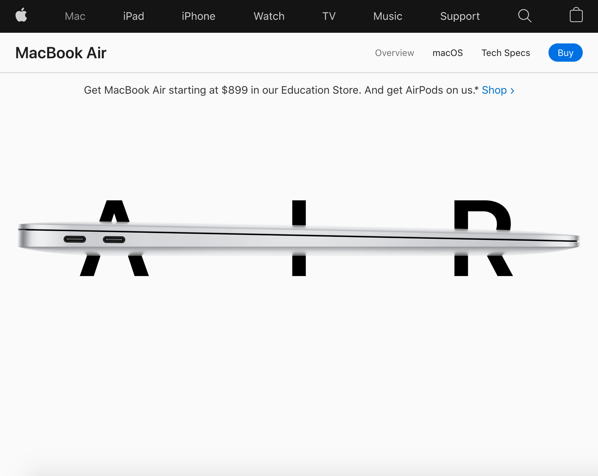

White Space
Apple
Apple's Website With Apple being one of the biggest companies in the world, we couldn’t except less than the best kind of design, and as most designers know, one of the most smart ideas is to take advantage of clean design and white space.
Their website is beautiful and simple. Taking a more active whitespace approach by show the message/product, but being overwhelming with all the selection they have.
If you analyze the rest of the website you’ll see it continues with this pattern and it guides the user through the content when they break the space with information, in a more passive whitespace approach.
Contrast
Smash
Smash's WebsiteIn this website we can see the smart idea of bringing attention to the main information by using contrast. This contrast was built with first the background of the website being of clear colors but as you scroll down you see that it changes to a dark backgrounds.
In this situation then, the color of contrast needed to be a smart color to be used as a whole in both types of backgrounds.
As we can observe the color chosen was orange and it gave an important attention to these buttons and other details throughout the page, details that are important information, or as mentioned before, call to actions.
Visual Hierarchy
Spotify
Spotify's WebsiteTo rely in Visual Hierarchy to make information clear and communicate what you want, is a smart move but it includes a lot of different aspects.
In Spotify’s initial webpage you can clearly see that they used colors, size, placement, forms and other techniques in this design to draw the user’s eyes where they want.
First there is the message of what Spotify os there for. Second you can observe the the call to action button calling you to click it, but if you don’t the menu bar in the top, with white letters (or the white symbol in case the page is looked over a smaller screen) will be the next resource to find information.